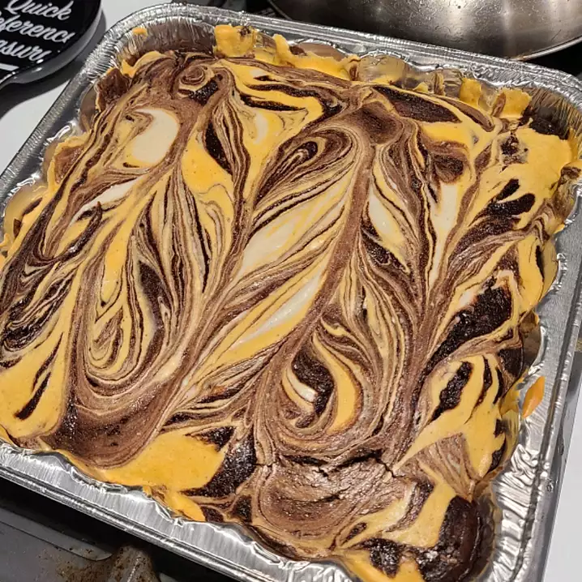

Odin Recipes
Cheesecake Brownies

Jazz up an out-of-the-box brownie mix with an easy cheesecake topping.
Ingredients
- 1 (19.8 ounce) package brownie mix
- 1 (8 ounce) package cream cheese
- 1 egg
- ⅓ cup white sugar
Steps
- Prepare the brownie mix as directed by manufacturer. Preheat oven to temperature indicated on box. Grease a 9x13 inch pan.
- Spread the brownie batter evenly into the prepared pan. Using an electric mixer, beat together the cream cheese, egg and sugar until smooth. Dollop the cream cheese mixture on top of the brownie batter. Swirl together using a knife or skewer.
- Bake according to manufacturer's instructions. Brownies will be done when a toothpick inserted comes out clean. Cool in the pan, then cut into bars and serve.